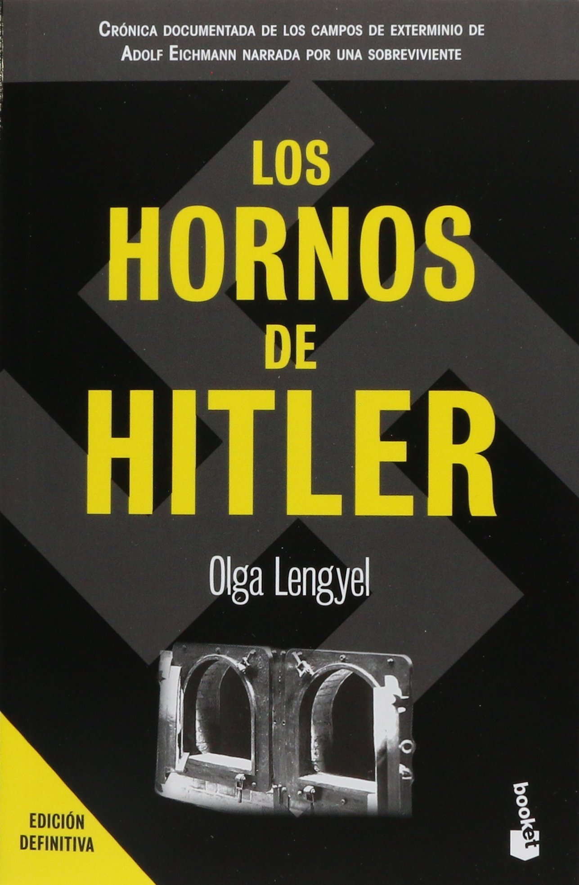
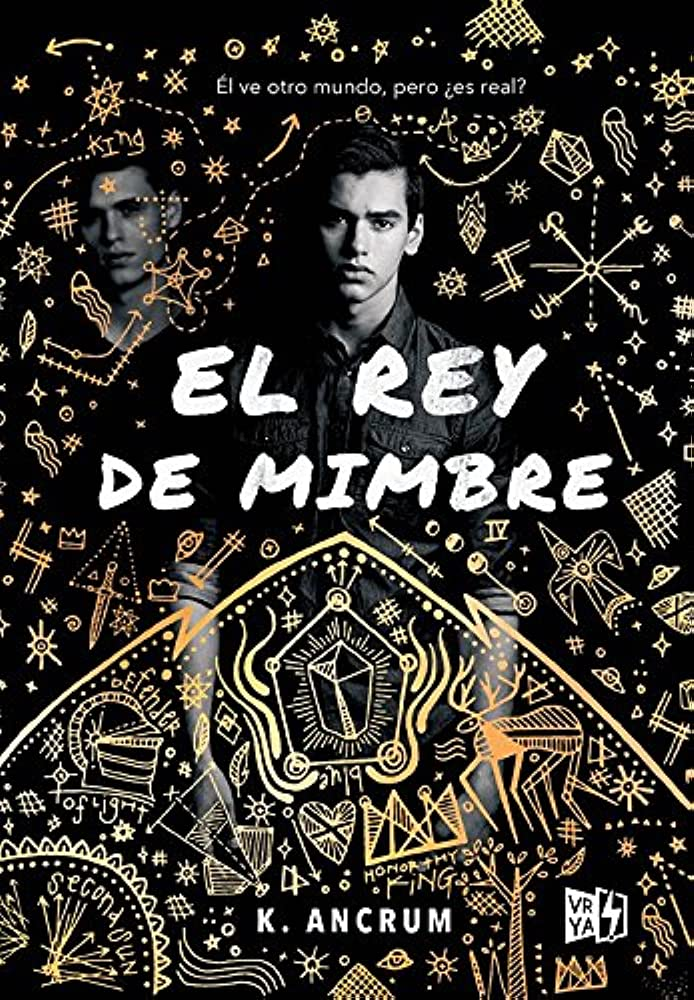

| Shitty Lemur🍒 | 🌸Home🌸 | 🌸Contacts🌸 | 🌸Art🌸 | 🌸Gustos🌸 |
Libros |
|  | Mi libro favorito son "Los Hornos de Hitler" Un libro que leí a mis 14 años y que desde entonces ha sido mi libro favorito, por su forma tan cruda y sincera de relatar el holocausto desde un punto de vist en primera persona de una sobreviviente y la realidad vivida como una mujer prisionera entre el terrible tiempo de la segunda guerra mundial. |
| El segundo lugar se lo lleva "El Rey de Mimbre", un thriller psicológico que juega con la percepcón de la realidad del lector, adentrandose en un doble mundo desde la vista de alguien afectado. |  |
Música |
| Mitski, es mi cantante favorita y siento que no hay canción de ella la cual no sepa la letra, simplemente la amo mucho. | |
| Igual el cantante de Rammstein, Till Lindemann me gusta mucho como solista, siendo esta una canción que me gusta mucho de él. | |
| La banda Rammstein es por mucha mi favorita cuando del género metal se trata. | |
| Pomme es una autora francesa que destaco por su delicadeza de hacer sus canciones junto a la tranquilidad que estas transmiten. |